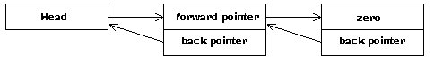

Link lists are used to join together items that must be treated in some manner when some sort of event occurs. The list needs to be created in a manner that allows items to be added to the list in the kernel and in the application.
A common linked list structure allows empty to deal with removing links that point to the code that is about to be removed.
HEX
All lists are linked back to here.
\ single linked list
pointer %lists_head
Describe the list head entry
zero
| DUP CONSTANT _#lh_user_pointer CELL+
| DUP CONSTANT _#lh_init_link CELL+
| DUP CONSTANT _#lh_link_type CELL+
DROP
Different types of linking methods are supported. We need to be able to extract from the list head the link type so that _empty_lists can unlink items correctly.
zero
DUP CONSTANT _#DP_single_linked_list 1+
DUP CONSTANT _#DP_double_linked_list 1+
DUP CONSTANT _#word_list 1+
DUP CONSTANT _#DP_word_list 1+ \ the address provided is a DP offset
DROP
Used within kernel code to create a new kernel list. List created in this manner are cleaned up with _empty_Lists. Using this you are able to add lists and not worry about items linked in getting into a mess when empty is called.
forth&host : create_listhead
host&forth
\ this is the head of a linked list
\ that can be extended in the application
uhere
\ for the contents
DUP add_reference
\ for the word
DP_REFERENCE
\ This is for empty.
\ This doesn't have to start in the above words
\ data field.
\ This has to be an offset.
uhere DP_data_offset t,
CELL uallot
HERE add_reference
HERE %lists_head t@ t, %lists_head t!
_#DP_single_linked_list t,
;
forth&host : create_double_listhead
host&forth
uhere
DP_REFERENCE
uhere DP_data_offset t,
2 CELLS uallot
HERE add_reference
HERE %lists_head t@ t, %lists_head t!
_#DP_double_linked_list t,
;
unlink_single is not something you really want to do unless the list is short, if items have to be unlinked you use a double linked list.
: unlink_single ( item head --)
_lock_word
BEGIN
2DUP
@ <>
WHILE
@
DUP @ 0= IF
\ item is not in list silently
\ give up
2DROP
EXIT
THEN
REPEAT
\ item link(--
SWAP @
SWAP !
_unlock_word
;
: link_single ( item head --)
_lock_word
2DUP @ SWAP ! !
_unlock_word
;
The words link_double and unlink_double work against link list as shown in the following diagram. Such lists allow you to unlink with just the address of the item to be removed. These words are written so the list can be accessed from multiple tasks.
For this to work the back pointer must be at CELL+ The link must point to next link_addr and back pointer must point to previous link_addr These are pretty useful words.
: unlink_double ( link_addr --)
_lock_word
DUP CELL+ SWAP \ back_addr link_addr (--
@ DUP IF \ back_addr (link_addr) (--
SWAP @ \ (link) (back) (--
2DUP \ (link) (back) (link) (back) (--
! \ (link) (back) (--
SWAP \ (back) (link) (--
CELL+
! \ (--
ELSE \ set the link pointing to us to zero
SWAP @ ! \ (--
THEN
_unlock_word
;
The words link_double and unlink_double work against link list as shown in the following diagram. Such lists allow you to unlink with just the address of the item to be removed. These words are written so the list can be accessed from signals if lock_word and unlock_word disables signals.
: link_double ( link_addr head --)
2DUP \ link_addr head link_addr head (--
SWAP \ link_addr head head link_addr (--
\ back pointer for new link is the head
CELL+ ! \ link_addr head
TUCK \ head link_addr head (--
_lock_word
@ DUP IF ( buffer linked into head already)
\ head link_addr (head) (--
2DUP \ head link_addr (head) link_addr (head) (--
\ fix up the back pointer of the following buffer
CELL+ \ ... link_addr back_point (--
! \ head link_addr (head) (--
OVER \ head link_addr (head) link_addr (--
! \ head link_addr (--
SWAP \ link_addr head (--
! \ (--
ELSE ( this is first)
\ head link_addr (head) (--
OVER \ head link_addr zero link_addr (--
! \ head link_addr (--
SWAP \ link_addr head (--
!
THEN \ (--
_unlock_word
;
Counting number in list method is same for single and double linked lists.
: number_in_list ( head --n)
zero SWAP
BEGIN
@ ?DUP
WHILE
SWAP 1+ SWAP
REPEAT
;